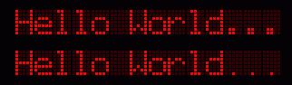

The following example shows how to customize the segment
map that defines the character display for a dot.
<?xml version="1.0" encoding="utf-8"?>
<mx:Application xmlns:mx="http://www.adobe.com/2006/mxml"
layout="vertical" xmlns:ilog="http://www.ilog.com/2007/ilog/flex"
backgroundColor="0x000000" backgroundGradientAlphas="[]">
<mx:Script>
<![CDATA[
import ilog.indicators.indicatorsClasses.SegmentMap;
import ilog.indicators.indicatorsClasses.AlphaNumericRenderer35;
private function customizeMapping():void
{
// Creates a factory of renderers
var cf:ClassFactory = new ClassFactory(AlphaNumericRenderer35);
// Creates a copy of the default segment map
var mySegmentMap:SegmentMap = AlphaNumericRenderer35.DEFAULT_MAP.clone();
// Changes the mapping for "."
mySegmentMap.setOnSegments(".", [32]);
cf.properties = {segmentMap: mySegmentMap};
// Set the renderers factory
indic2.renderer = cf;
}
]]>
</mx:Script>
<ilog:AlphaNumericIndicator35 id="indic1" text="Hello World..." charHeight="30" charGap="2"/>
<ilog:AlphaNumericIndicator35 id="indic2" text="Hello World..." charHeight="30" charGap="2"
initialize="customizeMapping()"/>
</mx:Application>
The resulting difference in dot size from 4 elements
to 1 element is shown in the following figure, with the “before” figure shown first.
